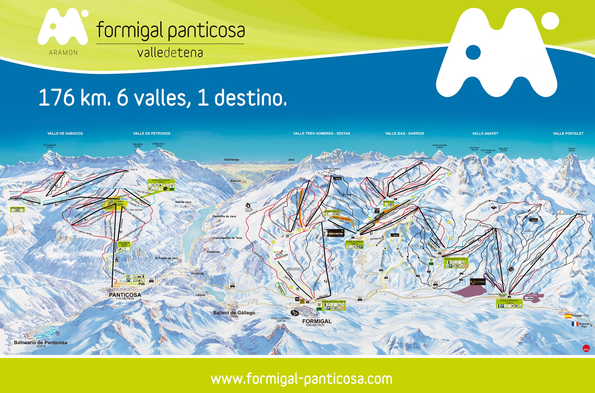

Estacion Formigal
Aramón Formigal-Panticosa es una estación de esquí situada en el municipio pirenaico de Sallent de Gállego, en el paraje de Formigal, junto a la urbanización del mismo nombre, en Huesca (España).
Ofrece los servicios habituales de una estación de esquí: remontes (con capacidad de 53.497 esquiadores por hora), enfermería, escuela de esquí, alquiler de material, restauración, etc. Dispone de pistas especiales como el Terrain Park o la Funny Track.
Es conocida la Ski Ratrack, una máquina pisapistas con un cable a modo de telesquí que traslada a esquiadores a una zona donde no llegan remontes. A partir de 2006 se comienzan a realizar actividades en verano en la zona de Anayet con un telesilla operativo y la instalación de un parque infantil. Además se ha cambiado el antiguo telecabina por un telesilla.
